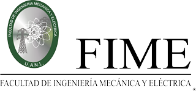
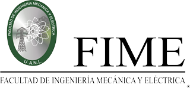

Inicio
 

FIME cuenta con 11 Programas Educativos en Licenciatura y 23 en Posgrado con una constante actualización en función de las tendencias nacionales e internacionales y en las necesidades tecnológicas y científicas de nuestra sociedad. Esta oferta está respaldada en función de su acreditación por CACEI, EUR-ACE y ABET en Licenciatura y PNPC, CIEES y AUIP en Posgrado. Así mismo, contamos con nuestra oferta de formación permanente a través de Educación Continua mediante diplomados, seminarios, talleres y cursos en ingeniería que promueven el crecimiento personal, la actualización y la capacitación profesional de los actores de la sociedad del conocimiento.